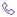

제증명 발급
증명서가 필요하시면 서류를 준비해 내원해 주세요.
진료기록이나 증명서를 신청할 때는 먼저 환자의 신원을 확인합니다. 가족 또는 위임받은 분이 방문하는 경우에는 신청 자격에 맞는 증빙 서류도 함께 제출해야 합니다.
다운로드 자료
신청 절차
STEP 1
신청서 작성
필요한 서식을 내려받아 내원 전에 작성해 주세요.
STEP 2
내원
서명한 신청서와 발급에 필요한 자료를 지참해 주세요.
STEP 3
신분확인 및 구비서류 제출
환자와 신청자의 신원 확인 자료 및 증빙을 접수에 내주세요.
STEP 4
수납 및 수령
신청 내용을 확인하고 수수료를 납부하시면 서류를 받으실 수 있습니다.
환자의 동의가 가능한 경우
신청인
환자의 나이
구비서류
환자 본인
만 17세 이상
환자 신분증 지참 후 본인 확인을 거쳐 신청
배우자, 부모·자녀 등 직계가족 및 배우자의 직계존속
만 14세 이상
신청자의 신분증 또는 사본, 환자 신분증 사본, 환자 본인이 서명한 동의서와 가족관계 확인 서류를 준비합니다.
배우자, 부모·자녀 등 직계가족 및 배우자의 직계존속
만 14세 미만(법정대리인만 가능)
신청자의 신분증 또는 사본과 법정대리인임을 확인할 가족관계 서류가 필요합니다. 법정대리인에 해당하지 않는 신청자는 제3자 위임 절차를 확인해 주세요.
환자에게 위임받은 사람: 형제자매와 그 밖의 친인척, 지인, 직장동료 및 보험회사 관계자 등
만 14세 이상
신청자 신분증 또는 사본과 환자 신분증 사본에, 환자가 직접 서명한 동의서 및 위임장을 첨부합니다.
환자에게 위임받은 사람: 형제자매와 그 밖의 친인척, 지인, 직장동료 및 보험회사 관계자 등
만 14세 미만
신청자 신분증과 법정대리인의 신분증 사본, 법정대리인임을 확인할 가족관계 증빙을 제출합니다. 동의서와 위임장에는 법정대리인이 직접 서명해야 합니다.
환자의 동의를 받을 수 없는 경우
신청자
구분
구비서류
배우자, 부모·자녀 등 직계가족 및 배우자의 직계존속
공통
신청자의 신분증 또는 사본, 환자 신분증 사본과 환자와의 가족관계를 증명하는 서류가 필요합니다.
배우자, 부모·자녀 등 직계가족 및 배우자의 직계존속
환자가 사망한 경우
사망을 확인할 수 있는 사망진단서, 가족관계증명서 또는 제적등본 등을 제출해 주세요.
배우자, 부모·자녀 등 직계가족 및 배우자의 직계존속
의식이 없거나 심한 질환·부상 등으로 환자가 직접 서명하기 어려운 경우
직접 서명할 수 없는 상태임을 확인한 의사의 진단서
배우자, 부모·자녀 등 직계가족 및 배우자의 직계존속
환자가 행방불명인 경우
실종 상태를 확인할 법원 결정문이나 주민등록 관련 증빙
배우자, 부모·자녀 등 직계가족 및 배우자의 직계존속
환자가 의사무능력자인 경우
법원의 관련 선고 결정문 사본 또는 의사결정 능력을 확인하는 정신건강의학과 전문의의 진단서
배우자, 부모·자녀 등 직계가족 및 배우자의 직계존속
환자가 군복무중인 경우
병적증명서 또는 복무확인서
배우자, 부모·자녀 등 직계가족 및 배우자의 직계존속
환자가 교도소 수감중인 경우
현재 교정시설에 수용돼 있음을 확인하는 증빙
배우자, 부모·자녀 등 직계가족 및 배우자의 직계존속
환자가 시설 위탁중인 경우
해당 기관이 환자를 위탁받았다는 사실을 확인하는 자료
법원/공단 요청
—
법원이나 공단의 공문을 접수한 부서에서 요청 내용을 검토한 뒤 발급
구비서류 제출 시 유의사항
신분증 관련
- · 신원 확인 자료에는 사진과 주민등록번호가 있어야 합니다. 주민등록증, 운전면허증 또는 여권 등을 준비해 주세요.
- · 주민등록증을 아직 발급받지 않은 만 17세 미만 환자는 여권이나 학생증, 가족관계 및 주민등록 관련 서류로 신원을 확인합니다.
친족관계증명서 관련
- · 가족관계 서류에는 환자와 신청자의 관계가 드러나야 하며 필요한 식별번호가 생략되지 않았는지 확인해 주세요.
- · 건강보험증만으로는 가족관계가 확인되지 않으므로 친족관계 증빙을 별도로 제출해야 합니다.
- · 관계 확인 서류는 기록 사본을 신청하는 날로부터 3개월 안에 발급된 것으로 준비해 주세요.
동의서 관련
- · 동의서를 작성할 때는 어느 진료일의 어떤 기록이 필요한지 발급 범위를 자세히 적어 주세요.
- · 법정 서식의 동의서와 위임장을 사용하고 환자가 직접 서명해 주세요. 도장으로 서명을 대신할 수 없습니다.
진단서 관련
- · 진단서는 환자 본인의 신청 여부를 확인하므로 대리 신청 전 가능 여부를 문의해 주세요.
- · 환자에게 동의를 구할 수 없는 상황이면 친족의 신청 자격과 이를 확인할 증빙을 검토합니다.
신청 자격이나 준비서류가 궁금하면 방문 전에 대표번호로 문의해 주세요.
전화 예약
010-4894-4905 (평일 아침 진료부터)

전화 걸기카카오톡 예약
24시간 접수